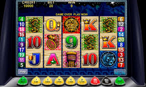

Play Your Favorite Casino Games Without Ever Leaving Your Home
You can play your favorite casino games without ever leaving your home. Online casinos offer the best in gaming entertainment with detailed instructions and a number of benefits. The best part is that you can practice for free and see which games you like best. In addition, many online gaming platforms have free demo versions so you can test them out first before you decide to play for real money. Then, you can decide if you want to keep playing or look for another site. slot online
The most popular online casino games in the U.S. are Blackjack, Roulette, and Baccarat. These are all easy to play and don't require a high amount of time. The house edge isn't very high and players can win big if they have good luck. They're available in many different online casinos and offer excellent value. In addition, they are regulated by state law, making it easier to find a safe site.

Unlike land-based casinos, online casinos offer more games and more convenience. The best part about them is that they can be played from home. There are no long lines, and you can choose to play for free or for real money. And the best part is that you can play your favorite casino games without ever leaving your home. There are hundreds of different options, but if you are new to gambling, here are some of the best ones to start with.
Pai Gow is one of the most popular games in the online casino market in the U.S., and it can be played for play chips or real cash. While there is a small house edge, you should avoid playing for bonus payouts as the house edge is not very high. Baccarat is another classic game that offers good value for money. Most online casinos offer Baccarat, which is popular among budget players and deep pocketed people alike.
In addition to mobile apps, you can also play your favorite casino games online. All you need to do is download an Android app and log in to the website of the online casino. Once you've signed in, you can play for real money by clicking on the "play" button on the website. Moreover, you can also check the results of your previous wagers and find out the payout terms of different casinos. slot
When choosing a site, read reviews about the casino. There are many online casino sites with legitimate reputations. You can find the best real money games at a casino website. You can also download a mobile casino app if you wish to play on the move. With an online casino app, you can enjoy all your favorite casino games without ever leaving your home. The best online casinos offer you a great gambling experience.